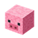

Something broken, crashing or acting strange? Tell us what happened. Your report becomes a public issue on the Oinkster GitHub page, so anyone can follow the fix.
List the steps one per line, starting from opening the launcher.
Only if you're happy for it to appear on the public issue. Don't post your email.